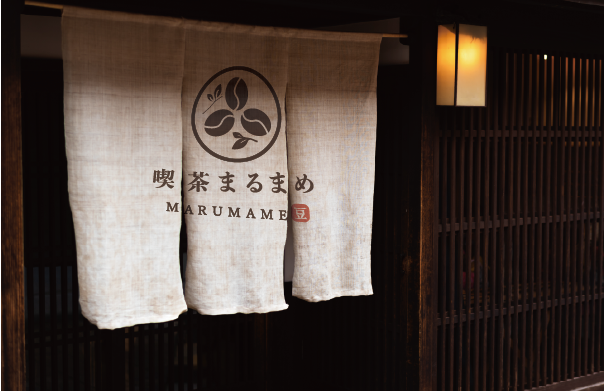
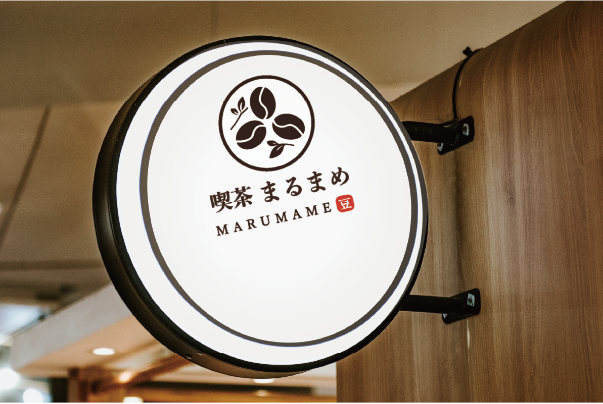

Parts Design / Logo Design
喫茶まるまめ
和カフェを想定し、親しみやすさと落ち着きを両立することを目指して制作したロゴデザインです。
作品名
喫茶まるまめ
概要
和の落ち着きと、カフェらしいやさしさを感じられるロゴを目指して制作しました。 豆のモチーフを中心に構成し、店名との統一感が出るよう設計しています。
ターゲット
20〜40代を中心に、落ち着いた空間や和の雰囲気を好む層を想定しています。
デザイン意図
コーヒー豆を丸く組み合わせることで、親しみやすさとやわらかな印象を表現しました。 ブラウンを基調にまとめることで、温かみと落ち着きのあるブランドイメージになるよう意識しています。
工夫した点
シンボル・和文ロゴ・英字ロゴのバランスを整え、単体でも組み合わせでも使いやすい構成にしました。 のれんや看板など、店舗で使用した際にも自然に馴染むよう、視認性と世界観の両立を意識しています。
Logo Application
使用イメージ
ロゴが実際の店舗で使用された際の印象が伝わるよう、のれんと看板のモックアップを制作しました。

